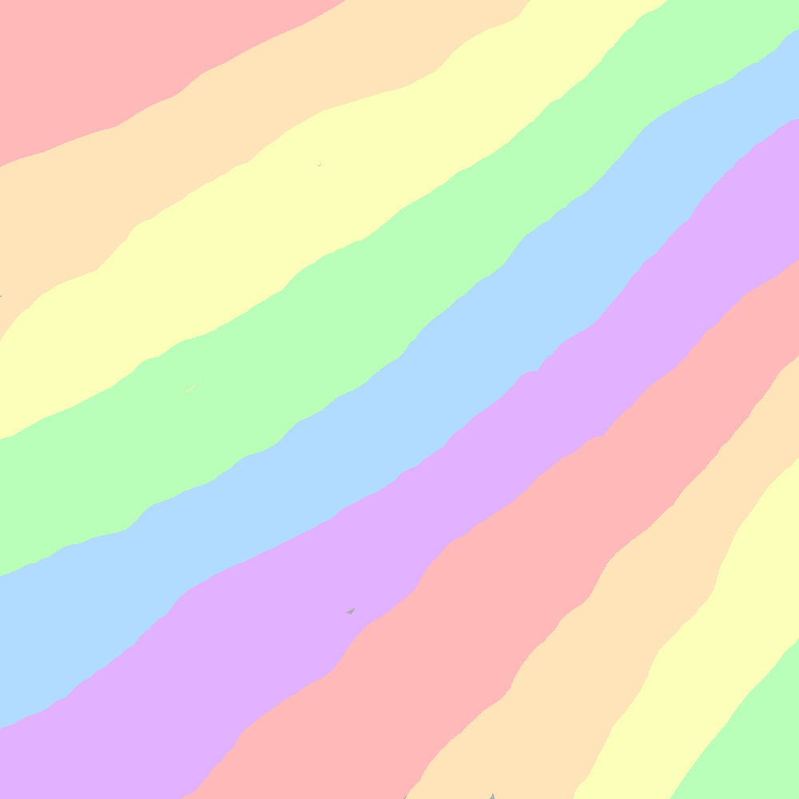
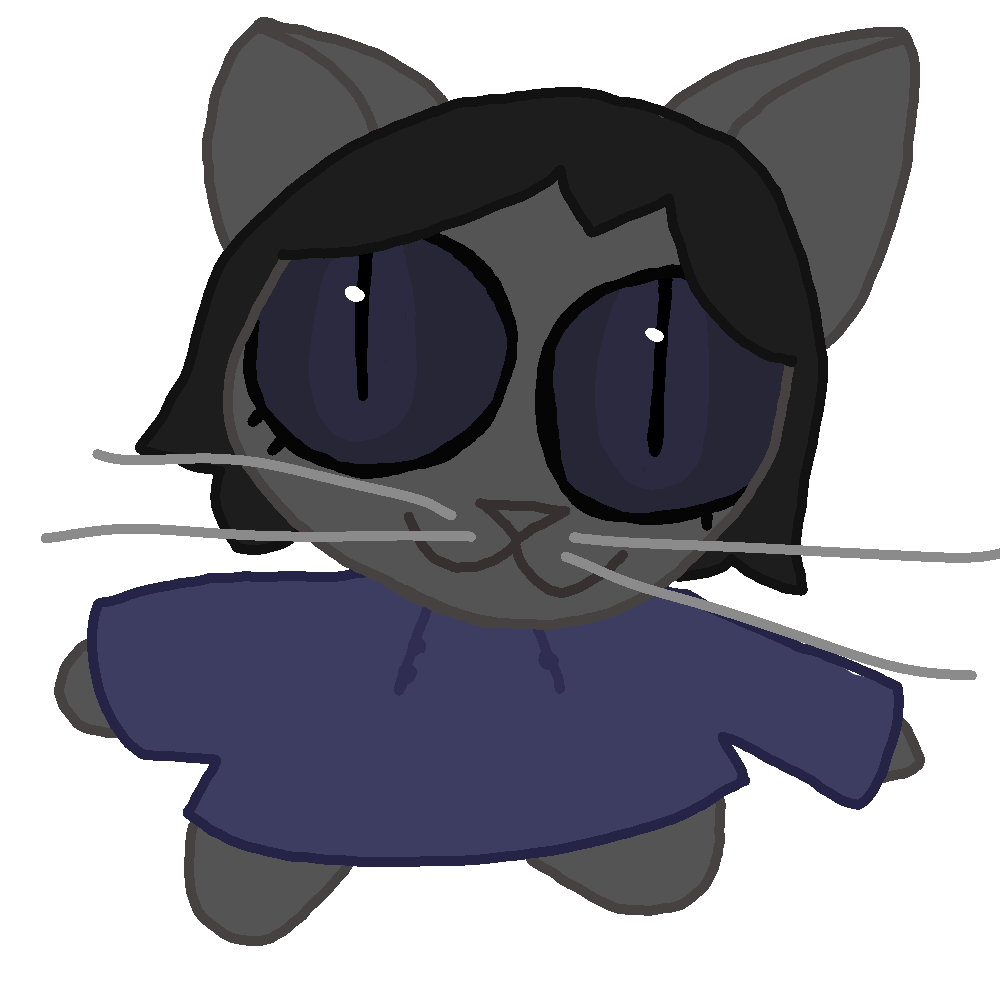

Introduction
Hello, here's a personal website made by a creature who really loves their computer and their cats and tons of other stuff. I'm mainly making this website because I was banned from Facebook and want somewhere to yap where people will (hopefully) see!
Features I'm planning on having on this site:
- For this site to be as accessible as I can make it.
- Cute little drawings.
- For the site to fit my personal style.
There are certain things like light/dark modes that are things I'd love to add, but it isn't really a priority for me. As of now basic accessability features like alt text on pictures and things being pretty are my main priorities.
About the Creator
Important Details
- Name:
- I don't like sharing my name online.
- Age:
- 21
- Pronouns:
- they/them and it/its.
- Favorite color:
- Pastel pink!
Other identity stuff
- I'm otherkin! (Hence why I refer to myself as a creature.) (For me it's just a psychological thing, not a spiritual thing.)
- I'm neurodivergent! (Autism and primarily inattentive adhd plus some mental illnesses.)
- I'm aroace! That's the shortened version of aromantic asexual.
- I'm bigender! (Boyflux and Girlflux)
Some Interests I Have
Note: this list may be updated at any time.
- My Little Pony: Friendship is Magic.
- The Owl House.
- Minecraft, though I don't play it super often anymore and I usually play 1.12.2 modded peaceful mode.
- Fandom activities like reading fanfiction and shipping.
- Front end web development. (Not super great at it though.)
- Researching stuff I'm interested in.
- Writing lists, whether digitally or on paper. (It's calming for me.)
- Creative writing.
- Reading. (Though it can be hard for me to find books I actually want to read.)
Some Aspirations
Note: this may change over time.
- Helping others.
- Finding happiness.
- Being my authentic self.
- Being a good friend.
Resources to help you!
- Pronouns.page has information on gender and orientation labels as well as how to use different pronoun sets.
- The National Autistic Society has a good amount of information about autism on their site.
Contact
If you want to contact me, my username on Discord is 506moonlight. Just get sure to let me know you're here from my site and I'll make sure to reply.
Also, if you like the writing on my blog, you may like the writing on my Substack. My username over there is crazymeows. You can also use Substack to direct message me if you have that and not Discord.
Credits
- The font (if it's working right) is Space Mono which was designed by Colophon Foundry. I found the font on Google Fonts.
- I used VSCodium to type up the HTML and CSS and used Vivaldi Browser (which is based on Chromium I'm pretty sure) to test the site.
- I used Krita to draw the drawings.